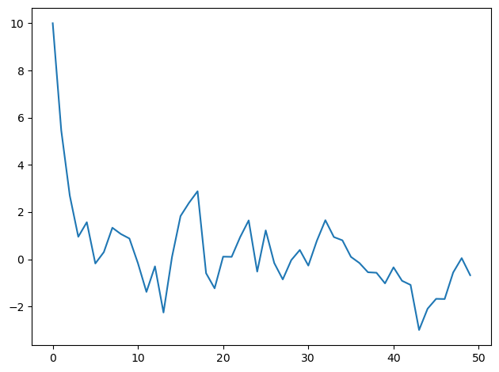
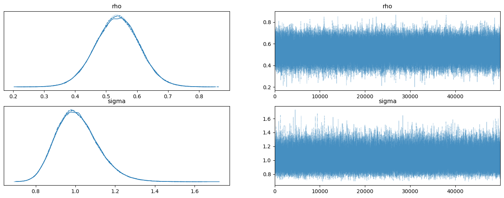
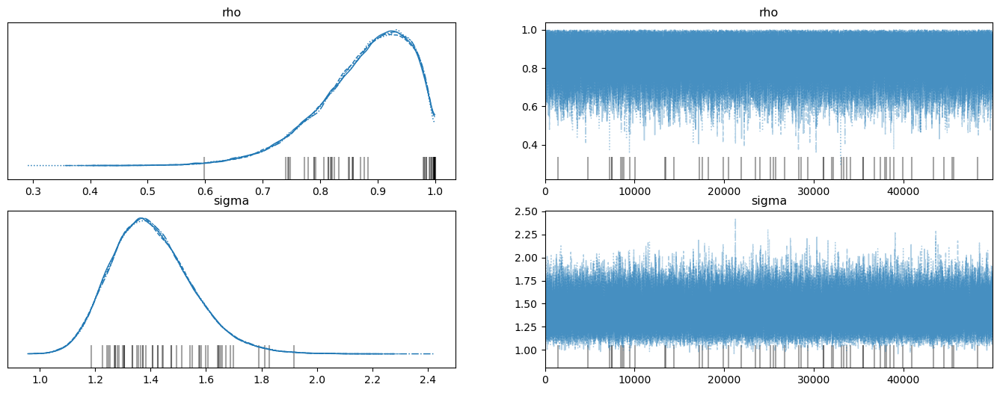
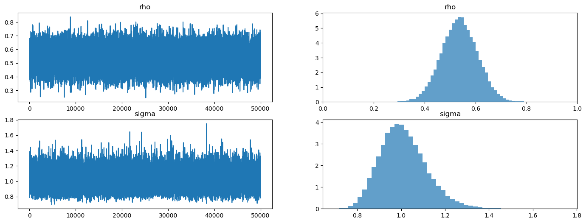
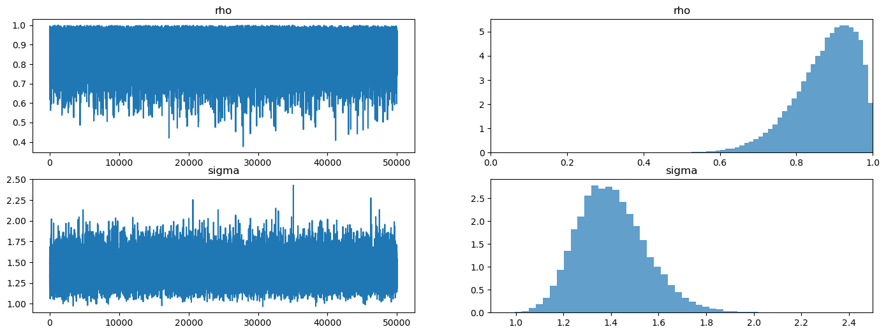

8. Posterior Distributions for AR(1) Parameters#
GPU
This lecture was built using a machine with access to a GPU — although it will also run without one.
Google Colab has a free tier with GPUs that you can access as follows:
Click on the “play” icon top right
Select Colab
Set the runtime environment to include a GPU
!pip install numpyro jax
In addition to what’s included in base Anaconda, we need to install the following packages
!pip install arviz pymc
We’ll begin with some Python imports.
import arviz as az
import pymc as pmc
import numpyro
from numpyro import distributions as dist
import numpy as np
import jax.numpy as jnp
from jax import random
import matplotlib.pyplot as plt
import logging
logging.basicConfig()
logger = logging.getLogger('pymc')
logger.setLevel(logging.CRITICAL)
/home/runner/miniconda3/envs/quantecon/lib/python3.12/site-packages/arviz/__init__.py:50: FutureWarning:
ArviZ is undergoing a major refactor to improve flexibility and extensibility while maintaining a user-friendly interface.
Some upcoming changes may be backward incompatible.
For details and migration guidance, visit: https://python.arviz.org/en/latest/user_guide/migration_guide.html
warn(
This lecture uses Bayesian methods offered by pymc and numpyro to make statistical inferences about two parameters of a univariate first-order autoregression.
The model is a good laboratory for illustrating consequences of alternative ways of modeling the distribution of the initial \(y_0\):
As a fixed number
As a random variable drawn from the stationary distribution of the \(\{y_t\}\) stochastic process
The first component of the statistical model is
where the scalars \(\rho\) and \(\sigma_x\) satisfy \(|\rho| < 1\) and \(\sigma_x > 0\); \(\{\epsilon_{t+1}\}\) is a sequence of i.i.d. normal random variables with mean \(0\) and variance \(1\).
The second component of the statistical model is
Consider a sample \(\{y_t\}_{t=0}^T\) governed by this statistical model.
The model implies that the likelihood function of \(\{y_t\}_{t=0}^T\) can be factored:
where we use \(f\) to denote a generic probability density.
The statistical model (8.1)-(8.2) implies
We want to study how inferences about the unknown parameters \((\rho, \sigma_x)\) depend on what is assumed about the parameters \(\mu_0, \sigma_0\) of the distribution of \(y_0\).
Below, we study two widely used alternative assumptions:
\((\mu_0,\sigma_0) = (y_0, 0)\) which means that \(y_0\) is drawn from the distribution \({\mathcal N}(y_0, 0)\); in effect, we are conditioning on an observed initial value.
\(\mu_0,\sigma_0\) are functions of \(\rho, \sigma_x\) because \(y_0\) is drawn from the stationary distribution implied by \(\rho, \sigma_x\).
Note: We do not treat a third possible case in which \(\mu_0,\sigma_0\) are free parameters to be estimated.
Unknown parameters are \(\rho, \sigma_x\).
We have independent prior probability distributions for \(\rho, \sigma_x\) and want to compute a posterior probability distribution after observing a sample \(\{y_{t}\}_{t=0}^T\).
The notebook uses pymc4 and numpyro to compute a posterior distribution of \(\rho, \sigma_x\). We will use NUTS samplers to generate samples from the posterior in a chain. Both of these libraries support NUTS samplers.
NUTS is a form of Monte Carlo Markov Chain (MCMC) algorithm that bypasses random walk behaviour and allows for convergence to a target distribution more quickly. This not only has the advantage of speed, but allows for complex models to be fitted without having to employ specialised knowledge regarding the theory underlying those fitting methods.
Thus, we explore consequences of making these alternative assumptions about the distribution of \(y_0\):
A first procedure is to condition on whatever value of \(y_0\) is observed. This amounts to assuming that the probability distribution of the random variable \(y_0\) is a Dirac delta function that puts probability one on the observed value of \(y_0\).
A second procedure assumes that \(y_0\) is drawn from the stationary distribution of a process described by (8.1) so that \(y_0 \sim {\cal N} \left(0, {\sigma_x^2\over (1-\rho)^2} \right) \)
When the initial value \(y_0\) is far out in a tail of the stationary distribution, conditioning on an initial value gives a posterior that is more accurate in a sense that we’ll explain.
Basically, when \(y_0\) happens to be in a tail of the stationary distribution and we don’t condition on \(y_0\), the likelihood function for \(\{y_t\}_{t=0}^T\) adjusts the posterior distribution of the parameter pair \(\rho, \sigma_x \) to make the observed value of \(y_0\) more likely than it really is under the stationary distribution, thereby adversely twisting the posterior in short samples.
An example below shows how not conditioning on \(y_0\) adversely shifts the posterior probability distribution of \(\rho\) toward larger values.
We begin by solving a direct problem that simulates an AR(1) process.
How we select the initial value \(y_0\) matters.
If we think \(y_0\) is drawn from the stationary distribution \({\mathcal N}(0, \frac{\sigma_x^{2}}{1-\rho^2})\), then it is a good idea to use this distribution as \(f(y_0)\). Why? Because \(y_0\) contains information about \(\rho, \sigma_x\).
If we suspect that \(y_0\) is far in the tails of the stationary distribution – so that variation in early observations in the sample have a significant transient component – it is better to condition on \(y_0\) by setting \(f(y_0) = 1\).
To illustrate the issue, we’ll begin by choosing an initial \(y_0\) that is far out in a tail of the stationary distribution.
def ar1_simulate(rho, sigma, y0, T):
# Allocate space and draw epsilons
y = np.empty(T)
eps = np.random.normal(0.,sigma,T)
# Initial condition and step forward
y[0] = y0
for t in range(1, T):
y[t] = rho*y[t-1] + eps[t]
return y
sigma = 1.
rho = 0.5
T = 50
np.random.seed(145353452)
y = ar1_simulate(rho, sigma, 10, T)
plt.plot(y)
plt.tight_layout()

Now we shall use Bayes’ law to construct a posterior distribution, conditioning on the initial value of \(y_0\).
(Later we’ll assume that \(y_0\) is drawn from the stationary distribution, but not now.)
First we’ll use pymc4.
8.1. PyMC Implementation#
For a normal distribution in pymc,
\(var = 1/\tau = \sigma^{2}\).
AR1_model = pmc.Model()
with AR1_model:
# Start with priors
rho = pmc.Uniform('rho', lower=-1., upper=1.) # Assume stable rho
sigma = pmc.HalfNormal('sigma', sigma = np.sqrt(10))
# Expected value of y at the next period (rho * y)
yhat = rho * y[:-1]
# Likelihood of the actual realization
y_like = pmc.Normal('y_obs', mu=yhat, sigma=sigma, observed=y[1:])
pmc.sample by default uses the NUTS samplers to generate samples as shown in the below cell:
with AR1_model:
trace = pmc.sample(50000, tune=10000, return_inferencedata=True)
with AR1_model:
az.plot_trace(trace, figsize=(17,6))

Evidently, the posteriors aren’t centered on the true values of \(.5, 1\) that we used to generate the data.
This is a symptom of the classic Hurwicz bias for first order autoregressive processes (see Leonid Hurwicz [Hurwicz, 1950].)
The Hurwicz bias is worse the smaller is the sample (see [Orcutt and Winokur, 1969]).
Be that as it may, here is more information about the posterior.
with AR1_model:
summary = az.summary(trace, round_to=4)
summary
| mean | sd | hdi_3% | hdi_97% | mcse_mean | mcse_sd | ess_bulk | ess_tail | r_hat | |
|---|---|---|---|---|---|---|---|---|---|
| rho | 0.5363 | 0.0709 | 0.4016 | 0.6683 | 0.0002 | 0.0002 | 176053.5729 | 126614.8804 | 1.0 |
| sigma | 1.0105 | 0.1068 | 0.8166 | 1.2098 | 0.0003 | 0.0003 | 173926.3058 | 138765.5111 | 1.0 |
Now we shall compute a posterior distribution after seeing the same data but instead assuming that \(y_0\) is drawn from the stationary distribution.
This means that
We alter the code as follows:
AR1_model_y0 = pmc.Model()
with AR1_model_y0:
# Start with priors
rho = pmc.Uniform('rho', lower=-1., upper=1.) # Assume stable rho
sigma = pmc.HalfNormal('sigma', sigma=np.sqrt(10))
# Standard deviation of ergodic y
y_sd = sigma / np.sqrt(1 - rho**2)
# yhat
yhat = rho * y[:-1]
y_data = pmc.Normal('y_obs', mu=yhat, sigma=sigma, observed=y[1:])
y0_data = pmc.Normal('y0_obs', mu=0., sigma=y_sd, observed=y[0])
with AR1_model_y0:
trace_y0 = pmc.sample(50000, tune=10000, return_inferencedata=True)
# Grey vertical lines are the cases of divergence
with AR1_model_y0:
az.plot_trace(trace_y0, figsize=(17,6))

with AR1_model:
summary_y0 = az.summary(trace_y0, round_to=4)
summary_y0
| mean | sd | hdi_3% | hdi_97% | mcse_mean | mcse_sd | ess_bulk | ess_tail | r_hat | |
|---|---|---|---|---|---|---|---|---|---|
| rho | 0.8758 | 0.0812 | 0.7324 | 0.9987 | 0.0002 | 0.0002 | 108266.8043 | 78716.6226 | 1.0001 |
| sigma | 1.4044 | 0.1469 | 1.1417 | 1.6820 | 0.0004 | 0.0004 | 126618.4540 | 105623.3321 | 1.0000 |
Please note how the posterior for \(\rho\) has shifted to the right relative to when we conditioned on \(y_0\) instead of assuming that \(y_0\) is drawn from the stationary distribution.
Think about why this happens.
Hint
It is connected to how Bayes Law (conditional probability) solves an inverse problem by putting high probability on parameter values that make observations more likely.
We’ll return to this issue after we use numpyro to compute posteriors under our two alternative assumptions about the distribution of \(y_0\).
We’ll now repeat the calculations using numpyro.
8.2. Numpyro Implementation#
def plot_posterior(sample):
"""
Plot trace and histogram
"""
# To np array
rhos = sample['rho']
sigmas = sample['sigma']
rhos, sigmas, = np.array(rhos), np.array(sigmas)
fig, axs = plt.subplots(2, 2, figsize=(17, 6))
# Plot trace
axs[0, 0].plot(rhos) # rho
axs[1, 0].plot(sigmas) # sigma
# Plot posterior
axs[0, 1].hist(rhos, bins=50, density=True, alpha=0.7)
axs[0, 1].set_xlim([0, 1])
axs[1, 1].hist(sigmas, bins=50, density=True, alpha=0.7)
axs[0, 0].set_title("rho")
axs[0, 1].set_title("rho")
axs[1, 0].set_title("sigma")
axs[1, 1].set_title("sigma")
plt.show()
def AR1_model(data):
# set prior
rho = numpyro.sample('rho', dist.Uniform(low=-1., high=1.))
sigma = numpyro.sample('sigma', dist.HalfNormal(scale=np.sqrt(10)))
# Expected value of y at the next period (rho * y)
yhat = rho * data[:-1]
# Likelihood of the actual realization.
y_data = numpyro.sample('y_obs', dist.Normal(loc=yhat, scale=sigma), obs=data[1:])
# Make jnp array
y = jnp.array(y)
# Set NUTS kernal
NUTS_kernel = numpyro.infer.NUTS(AR1_model)
# Run MCMC
mcmc = numpyro.infer.MCMC(NUTS_kernel, num_samples=50000, num_warmup=10000, progress_bar=False)
mcmc.run(rng_key=random.PRNGKey(1), data=y)
plot_posterior(mcmc.get_samples())

mcmc.print_summary()
mean std median 5.0% 95.0% n_eff r_hat
rho 0.54 0.07 0.54 0.42 0.65 44430.72 1.00
sigma 1.01 0.11 1.00 0.84 1.18 42626.35 1.00
Number of divergences: 0
Next, we again compute the posterior under the assumption that \(y_0\) is drawn from the stationary distribution, so that
Here’s the new code to achieve this.
def AR1_model_y0(data):
# Set prior
rho = numpyro.sample('rho', dist.Uniform(low=-1., high=1.))
sigma = numpyro.sample('sigma', dist.HalfNormal(scale=np.sqrt(10)))
# Standard deviation of ergodic y
y_sd = sigma / jnp.sqrt(1 - rho**2)
# Expected value of y at the next period (rho * y)
yhat = rho * data[:-1]
# Likelihood of the actual realization.
y_data = numpyro.sample('y_obs', dist.Normal(loc=yhat, scale=sigma), obs=data[1:])
y0_data = numpyro.sample('y0_obs', dist.Normal(loc=0., scale=y_sd), obs=data[0])
# Make jnp array
y = jnp.array(y)
# Set NUTS kernal
NUTS_kernel = numpyro.infer.NUTS(AR1_model_y0)
# Run MCMC
mcmc2 = numpyro.infer.MCMC(NUTS_kernel, num_samples=50000, num_warmup=10000, progress_bar=False)
mcmc2.run(rng_key=random.PRNGKey(1), data=y)
plot_posterior(mcmc2.get_samples())

mcmc2.print_summary()
mean std median 5.0% 95.0% n_eff r_hat
rho 0.88 0.08 0.89 0.76 1.00 31419.08 1.00
sigma 1.41 0.15 1.39 1.17 1.64 26542.09 1.00
Number of divergences: 0
Look what happened to the posterior!
It has moved far from the true values of the parameters used to generate the data because of how Bayes’ Law (i.e., conditional probability)
is telling numpyro to explain what it interprets as “explosive” observations early in the sample.
Bayes’ Law is able to generate a plausible likelihood for the first observation by driving \(\rho \rightarrow 1\) and \(\sigma \uparrow\) in order to raise the variance of the stationary distribution.
Our example illustrates the importance of what you assume about the distribution of initial conditions.